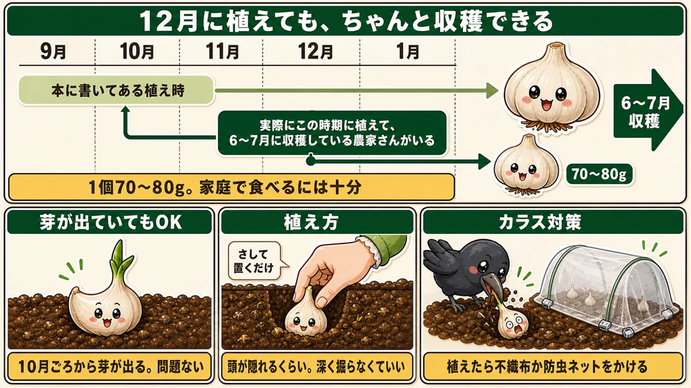
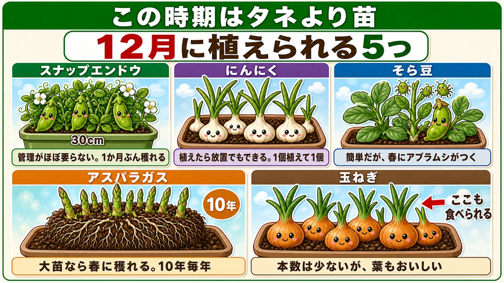
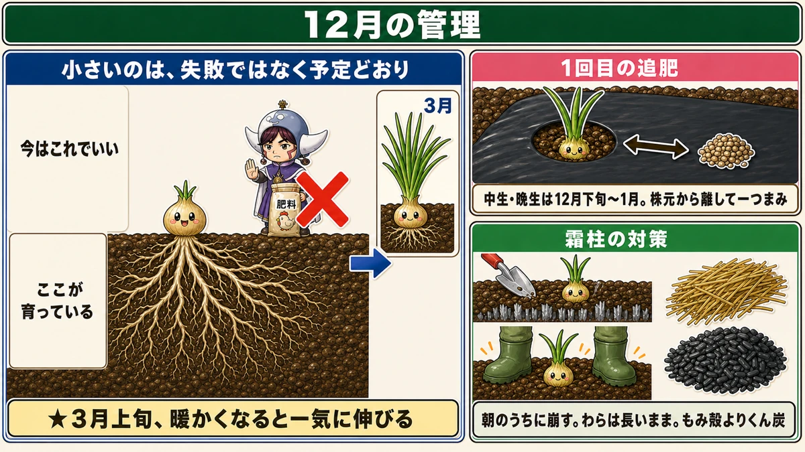
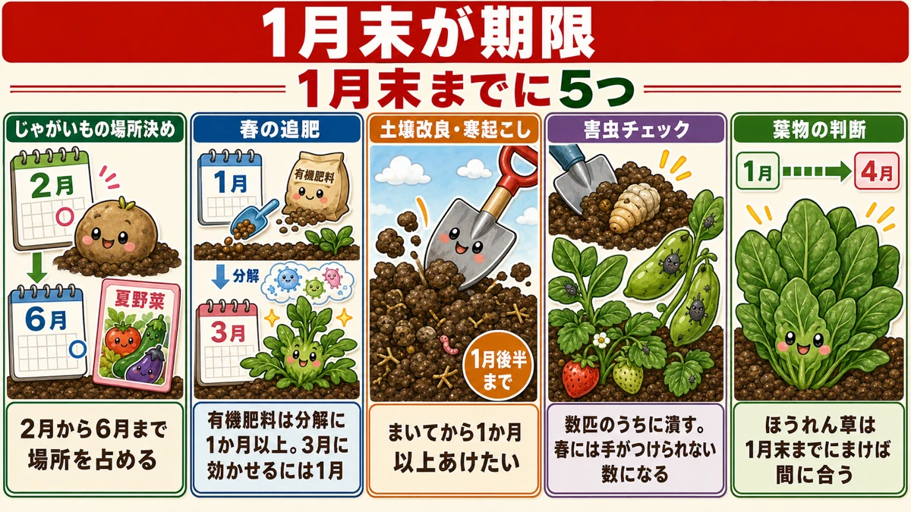

【12月にまく・植える野菜】にんにくは12月でも間に合います🧄

🗨️「12月って、もう何もできないよね」
🗨️「にんにくを植えそびれた。来年まで待つしかない？」
🗨️「冬のうちにやっておくことって、ある？」
どうも、8150（えいこう）です🌱 家庭菜園歴8年、理科の教員免許を持っていて、有機・無農薬で野菜を育てています。
毎月お届けしている「今月なにをまく・植えるか」の定期便、12月号です。
先に、この記事でいちばん言いたいことを言っておきますね。
にんにくは、12月に植えても間に合います。
「え、9月から10月じゃないの？」と思われますよね。私もそう思っていました。どの本にもそう書いてあります。
でも、12月から1月に植えて、6月から7月にちゃんと収穫している農家さんがいます。それも3年から4年、続けて。
今日はその話から始めます☺️
※以下の時期は中間地（関東〜関西の平野部）が目安。寒い地域は少し早め、暖かい地域は少し遅らせて✨️
📖 この記事の目次
今月の畑は、こんな状態
12月は正直に言って、植えられるものが少ない月です。
だからこの記事は、他の月号とは中身が違います。
- まだ間に合うもの（意外とあります）
- すでに植えたものの管理
- 1月末までに終わらせないと、夏に響くこと
この3本立てでいきます。
ひとつだけ、共通のルール
12月にやるなら、これを覚えてください。
★タネより、苗のほうが成功率が高い。
寒くて発芽しにくいからです。タネをまいて「出てこないな」と待っているうちに1月が終わってしまう。苗なら、その工程を飛ばせます。
ホームセンターにも、この時期の苗はちゃんと並んでいます。
★にんにくは、12月でも植えられます

この記事の目玉です。
私が話を聞いたのは、愛知県の、にんにくを作っている農家さんです。中間地ですね。
その方は、毎年12月から1月に植えています。理由は単純で、★9月10月は他の農作業が忙しくて、植える時間が取れないから。
そして6月から7月に、普通に収穫している。
どのくらいの大きさになるのか
ここが気になりますよね。
★1片あたり7〜8g、1個あたり70〜80g。
その方の言葉を借りると「十分なものができる」。実際、家庭で食べるぶんには何の不足もない大きさです。
3〜4年続けて、毎年これができている。だから「たまたま」ではないんですね。
種球から芽が出ていても大丈夫
12月まで置いておくと、種球（植えるためのにんにく）から芽が出てきます。10月ごろから出始めます。
★これ、問題ありません。
その方は、売れ残った種球を植えています。芽が出た状態のまま、そのまま。
「捨てるくらいなら植えてみよう」で始まったやり方が、3年続いているわけです。
植え方は、拍子抜けするほど簡単です
★頭がちょっと隠れるくらいの深さで、さして置くだけ。
深く掘る必要はありません。あとで周りの土をまいてならせば、ちょうどいい深さになります。
尖ったほうを上にして、押し込む。それだけです。
★ただし、肥料は控えめに
ここが重要です。その方が繰り返し言っていたのが、これでした。
★「大きいにんにくを作ろうとして肥料を増やすと、窒素が多すぎて春腐病を呼ぶ」
春腐病（はるぐされびょう）は、春に株元から腐ってくる病気です。
そして、もうひとつ。
★大きくなりすぎたにんにくは、腐りやすくなります。
品評会に出すなら別ですが、家庭で食べるなら70〜80gで十分。むしろそのほうが保存がききます。
肥料についての言葉が、私はいちばん刺さりました。
★「足りないのは足せるけど、多すぎた養分は抜けない」
そのとおりなんですよね。肥料は引き算ができません。多すぎたと気づいても、抜く方法は「作物に吸わせて、その株ごと畑の外に持ち出す」しかない。
だから元肥は控えめにして、様子を見ながら追肥で足していく。これが正解です。
カラスに気をつけてください
余談ですが、その方が笑いながら話していたことです。
★植えたばかりの種球を、カラスがほじくり返します。
しかも食べるわけでもなく、転がしていくだけ。翌朝行くと、パラパラと種球が地面に散らばっている。
植えたら、上から不織布か防虫ネットをかけておくと安心です。
プランターなら、まだ5つ植えられます

畑がなくても、あるいは畑が埋まっていても、プランターならまだ間に合います。
①スナップエンドウ
管理がほとんど要りません。直径30cmのプランターで、1か月ぶんくらい穫れます。
★買うと鮮度が落ちやすい野菜なので、穫ってすぐ食べられる価値が大きいです。
②にんにく
★植えたらそのまま放置でもできるくらい簡単です。
畑と同じで、12月植えでも問題ありません。ただし1個植えて1個しか穫れないので、量は期待しないでください。
③そら豆
管理は簡単ですが、★春にアブラムシが大量につきます。そこだけ覚悟が要ります。
プランターで10〜20本ほど。
④アスパラガス
★3年育った大苗を買ってください。12月に植えて、春に収穫できます。
直径30cmで、春先に3本ほど。数は少ないですが、★一度植えると10年くらい毎年穫れて、年々増えていきます。
⑤玉ねぎ
プランターだと3〜6本しか植えられません。難易度も高めです。
ただ、★上の緑の葉の部分も食べられて、これがおいしい。数本だけ育てる楽しみ方もあります。
育てているものの、12月の管理

玉ねぎ ー 1回目の追肥
★中生・晩生の品種は、12月下旬から1月に1回目の追肥です。
- 鶏ふんが使いやすいです（すぐ効いて、持続もする）。ぼかし肥でも構いません
- ★株元の近くではなく、少し離して軽く一つまみ
- 余裕があれば、上から土もかけておく
★「小さいから」と肥料を足さないでください
12月の玉ねぎを見ると、ほとんどの人が不安になります。私も最初はそうでした。あんなに小さくて大丈夫なのか、と。
大丈夫です。
★今の時期、玉ねぎは上にはそこまで大きくなりません。地下では根がしっかり張って、春に備えています。
そして★3月上旬、暖かくなると一気に伸び始めます。
小さいのは、失敗ではなく予定どおりなんですね。ここで肥料を足すと、かえって病気を呼びます。
霜柱の対策
★霜は12月から2月いっぱい発生します。
やっかいなのは霜柱で、株元にできると苗を持ち上げます。特に玉ねぎの植え穴にできやすい。浮いた苗は、風で倒れたり、根がむき出しになって枯れたりします。
- ★朝のうちに崩す（日中の太陽で溶けやすくなります）
- ★株の両脇を足でグッと押す。潰れると同時に株も固定されて一石二鳥
- わら・もみ殻・くん炭を株元に敷く
わらを敷くときは、★短く切ったものより長いままうねに沿って敷いてください。短いと風で飛びます。
★もみ殻より、もみ殻くん炭のほうがおすすめです。ミネラルの補給になり、地温も上がり、害虫のリスクも下がります。まきすぎということはないので、たっぷりどうぞ。
わらがない方へ
★立派に育っている玉ねぎなら、そもそも敷かなくて大丈夫です。小さい株だけで構いません。
代わりになるものは、ござ、庭木の枯れ葉、もみ殻。防虫ネットをかぶせるという手もあります。
忘れずに掘っておくもの
★初霜が降りる前に、じゃがいも・里芋・さつまいもを掘ってください。
霜に当たると傷んで、腐ってきます。天気予報を見て、初霜の予報が出たらその前に。
★1月末までに終わらせること5つ

ここからは、少し先の話です。でも12月のうちから知っておいてほしいので、この号に入れました。
理由があります。
★有機栽培は、時間がかかります。
肥料の分解にも、土づくりにも、月単位でかかる。だからギリギリで始めると間に合いません。12月のうちから逆算しておくと、春があわてずに済みます。
①じゃがいもの場所を決める
種芋は2月に売り出されます。
ここで見落としがちなのが、★じゃがいもは2月から6月まで、その場所をずっと占めるということ。
つまり、夏野菜を植えたい場所と重なると詰みます。夏野菜が植えられなくなる。
★1月のうちに、じゃがいもをどこに植えるか決めておいてください。
②春に向けた追肥は、1月下旬までに
これがいちばん大事かもしれません。
玉ねぎ・にんにく・春キャベツ・春ブロッコリー。暖かくなってから大きくなる野菜たちです。
★有機肥料は分解に時間がかかります。
だから、休眠から目覚めるタイミングで効かせたいなら、1月末が期限です。2月に入れても、効き始めるころには春が終わっています。
（化成肥料を使っている方は、2月以降でも間に合います）
③土壌改良は1月後半まで
春にまく野菜のために入れたものが、分解しきりません。
★寒起こしも、まいてから1か月以上あけたいので、1月後半には終えてください。
④害虫チェック
冬は、実は害虫退治の絶好機です。
★土の中で越冬しているさなぎを、掘り起こして撃退できます。スコップで掘って、害虫だけ取って、土は戻す。それだけです。
そして、これを忘れないでください。
★そら豆といちごにアブラムシがついていたら、春に大繁殖する前に潰しておく。
冬に数匹しかいなくても、春には手がつけられない数になります。数匹のうちに潰すのが、いちばん効率のいい防除です。
⑤葉物をまくか、休ませるかを決める
1月から葉物を育てると、4月ごろまで場所を使います。これも夏野菜の準備に影響します。
★ほうれん草は、1月末までにまけば、春野菜の準備に間に合う可能性があります。かなり小さいサイズにはなりますが。
まくか、休ませるか。早めに決めてください。
学ぶ：にんにくが冬にやっているのは、根を張ること🔬
理科の時間です。冒頭の「12月でも間に合う」を、もう一歩深めます。
なぜ、9月に植えても12月に植えても、収穫できるのでしょうか。
答えは、冬のあいだのにんにくが何をしているかにあります。
★地上部は、ほとんど伸びません。伸びているのは根です。
つまり「早く植える」の本当の意味は、「根を張る時間を長く取る」ということなんですね。
12月植えは、根を張る時間が短くなります。だから球はやや小さくなる。でも、それでも70〜80gにはなる。家庭で食べるには十分な大きさです。
「植え時を逃したら終わり」ではなく、「早いほど有利、でも遅くても穫れる」。そういう性質の野菜だと分かると、気が楽になりませんか。
だから、肥料を増やすのは方向違いです
ここが面白いところです。
「12月植えだと小さくなるなら、肥料を多めにすれば取り返せるのでは」と思いますよね。
でも、それは違います。
球が大きくなるのは、根が張って光合成の時間を積み上げた結果です。肥料で無理やり大きくすると、★窒素が多すぎて細胞が水っぽく、やわらかく育ちます。
やわらかい組織は、菌にとって入りやすい。だから春腐病を呼ぶ。しかも大きい球ほど、収穫後に腐りやすくなる。
★足りない分は足せますが、多すぎた分は抜けません。
引き算ができないというのは、そういうことです。
お子さんと一緒なら
★1月と3月に、1株だけ掘って根を見てください。
地上部はほとんど変わっていないのに、根の量がまったく違います。
「何もしていないように見えて、下ではこんなに働いていた」と分かる。冬の畑が、急に面白くなりますよ🧄
まとめ
ここまで読んでくださって、ありがとうございます！
12月は「もう遅い」月ではなく、「逆算する」月です。ポイントを整理しておきますね。
- ★にんにくは12月でも植えられる。1個70〜80gにはなる。種球から芽が出ていても問題なし
- ★肥料は控えめに。「足りないのは足せるが、多すぎた養分は抜けない」。窒素過多は春腐病を呼ぶ
- プランターならまだ5つ。スナップエンドウ・にんにく・そら豆・アスパラガス（3年大苗）・玉ねぎ。★タネより苗
- ★玉ねぎが小さくても肥料を足さない。地下では根が張っている。3月に一気に伸びる
- 霜柱は朝のうちに崩す。★わらは長いまま。もみ殻よりくん炭
- ★1月末までに ー じゃがいもの場所決め／春の追肥／土壌改良／害虫チェック／葉物の判断
全部やろうとしなくて大丈夫です。まずは、余っているにんにくが台所にあれば、1片だけ植えてみてください。半年後に、ちゃんと1個になります🧄
次回は、その先の話。冬のあいだ、玉ねぎとにんにくをどう管理すれば6月に大きくなるかをお話しします🧅
にんにく種球（ホワイト六片）
記事の主役です。12月に植えても1個70〜80gにはなります。芽が出ていても問題ありません。頭がちょっと隠れるくらいの深さで、さして置くだけ。台所に余っているものより、植える用の種球のほうが確実です。
![[商品価格に関しましては、リンクが作成された時点と現時点で情報が変更されている場合がございます。]](https://hbb.afl.rakuten.co.jp/hgb/565b74ce.f30a48e7.565b74cf.8a827250/?me_id=1368676&item_id=10000301&pc=https%3A%2F%2Fthumbnail.image.rakuten.co.jp%2F%400_mall%2Farakawaseed%2Fcabinet%2Fcompass1659994587.jpg%3F_ex%3D240x240&s=240x240&t=picttext "[商品価格に関しましては、リンクが作成された時点と現時点で情報が変更されている場合がございます。]")

不織布
植えたばかりの種球は、カラスにほじくり返されます。上からかけておくだけで防げます。防寒も兼ねられるので、この時期はまず1枚あると安心です。
![[商品価格に関しましては、リンクが作成された時点と現時点で情報が変更されている場合がございます。]](https://hbb.afl.rakuten.co.jp/hgb/56bc237a.e97551b1.56bc237b.2513ed10/?me_id=1310260&item_id=10000879&pc=https%3A%2F%2Fthumbnail.image.rakuten.co.jp%2F%400_mall%2Fdiokasei%2Fcabinet%2F007fusyokufu%2F12g%2Fimgrc0092049705.jpg%3F_ex%3D240x240&s=240x240&t=picttext "[商品価格に関しましては、リンクが作成された時点と現時点で情報が変更されている場合がございます。]")
もみ殻くん炭
霜柱で苗が浮くのを防ぎます。もみ殻より、くん炭のほうがミネラルの補給になり、地温も上がります。まきすぎということはないので、株元にたっぷりどうぞ。
![[商品価格に関しましては、リンクが作成された時点と現時点で情報が変更されている場合がございます。]](https://hbb.afl.rakuten.co.jp/hgb/56bc30bc.01c5b89d.56bc30bd.ee310357/?me_id=1231595&item_id=10000412&pc=https%3A%2F%2Fthumbnail.image.rakuten.co.jp%2F%400_mall%2Fplanto-iwa%2Fcabinet%2F2707.jpg%3F_ex%3D240x240&s=240x240&t=picttext "[商品価格に関しましては、リンクが作成された時点と現時点で情報が変更されている場合がございます。]")
炭化鶏ふん
玉ねぎの1回目の追肥に使います。中生・晩生なら12月下旬から1月。株元から少し離して、軽く一つまみだけ。すぐ効いて持続もするので、この時期に向いています。
![[商品価格に関しましては、リンクが作成された時点と現時点で情報が変更されている場合がございます。]](https://hbb.afl.rakuten.co.jp/hgb/55e7612a.7de1526b.55e7612b.01a50904/?me_id=1214866&item_id=10002182&pc=https%3A%2F%2Fthumbnail.image.rakuten.co.jp%2F%400_mall%2Fkaju%2Fcabinet%2F00714580%2F03462454%2F07486601%2Fimgrc0071643813.jpg%3F_ex%3D240x240&s=240x240&t=picttext "[商品価格に関しましては、リンクが作成された時点と現時点で情報が変更されている場合がございます。]")
スナップエンドウのタネ（つるなし）
プランターで12月に植えられる筆頭です。管理がほとんど要らず、直径30cmのプランターで1か月ぶん穫れます。畑が埋まっていても、これなら始められます。
![[商品価格に関しましては、リンクが作成された時点と現時点で情報が変更されている場合がございます。]](https://hbb.afl.rakuten.co.jp/hgb/552615f0.9cc2855e.552615f1.776f7de9/?me_id=1251188&item_id=10000610&pc=https%3A%2F%2Fthumbnail.image.rakuten.co.jp%2F%400_mall%2Fyonezawa%2Fcabinet%2Ftane01%2F10mame%2Fhorunsnack.jpg%3F_ex%3D240x240&s=240x240&t=picttext "[商品価格に関しましては、リンクが作成された時点と現時点で情報が変更されている場合がございます。]")